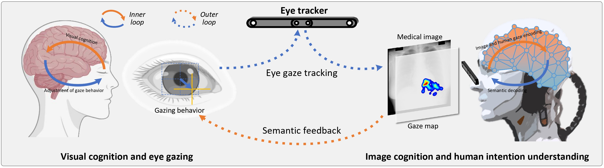
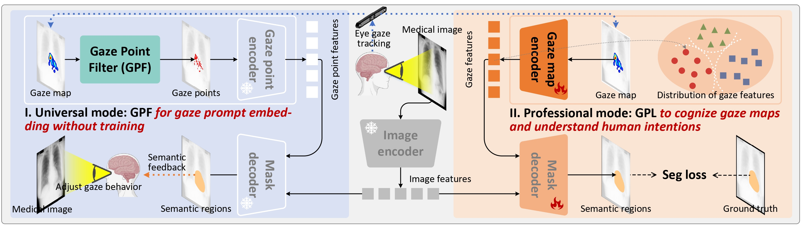

GAZER : Model-active human-centered artificial intelligence for medical visual assistance


Overview
Human-centered (HC) artificial intelligence (AI) collaborates human doctors and AI systems, that keeps human decision power (responsible) and improves their decision outcome, demonstrating great potential in medical visual assistance. During the interaction, it is able to assists the doctors to recognize the objects in medical images, thus enhancing their capabilities and empowering them achieve their clinical goals. Especially, with the development of foundation models, e.g., Segment Anything Models (SAM) and LLaVA , their emergence and homogenization capabilities enable the HCAI to be practiced in a wide range of medical scenarios through interaction. Therefore, it is poised to broadly reshape medical imaging and showing a promising future in energizing the capability of doctors.
Highlights
- It provides an AI-driven human-AI collaboration that empower doctors' medical ability without interference with their clinical workflow.
- We propose a novel gaze-prompted segment anything model, GAZER, for model-active interaction.
- A plug-and-play gaze point filter (GPF) module that stimulates the gaze-prompt-based emergence ability of the foundation models without any additional training.
- We present a gaze prompt learning (GPL) that learns to cognize the gaze maps and understand the human intentions in our GAZER, thus assisting medical visual practices in professional scenarios.
GAZER is flexibly and seamlessly applied in a variety of clinical scenarios
The framework of our GAZER

GAZER-GPL is able to understand the distinction between different gaze maps
BibTeX
If you find our project or pre-trained parameters useful in your research, please cite: